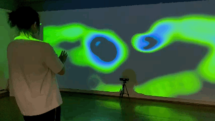

02 / Selected Work
CADRE SO Interactive Projection

This study develops a colorful interactive visual system for CADRE SO. Audience movement controls the projected textures and forms.
Back to projects ↗02 / Selected Work

This study develops a colorful interactive visual system for CADRE SO. Audience movement controls the projected textures and forms.
Back to projects ↗